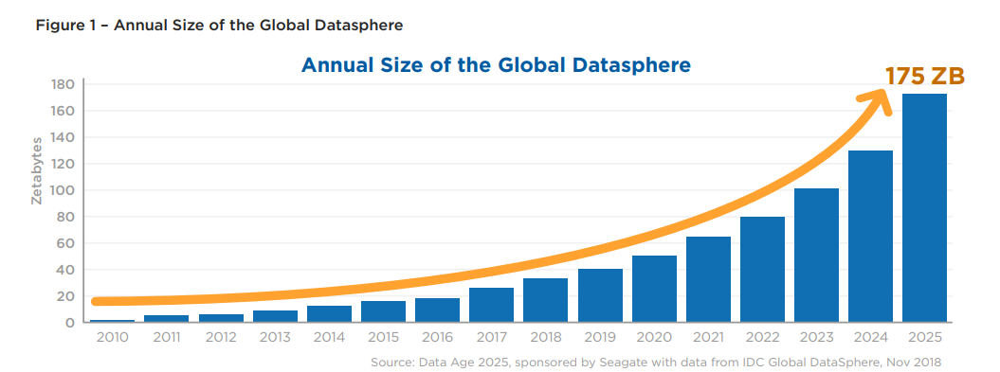

UNIVERSIDAD NACIONAL SANTIAGO ANTUNEZ DE MAYOLO-INGENIERÍA DE SISTEMAS E INFORMATICA
Actualizado en
RESUMEN
Somos una generación afortunada. Nunca antes en la historia de la humanidad ha habido una concentración de información como la que estamos viviendo ahora. La revolución digital junto con la tecnología está generando un crecimiento exponencial del volumen
de datos e información conocida como la big data a gran velocidad y en forma continua. Estos datos son generados por personas, máquinas y sensores; por transacciones electrónicas, uso de internet y entre muchos otros dando como resultado
una gran demanda de estas y generando grandes oportunidades en las diferentes áreas para el desarrollo de una sociedad.
Palabras Clave: Big Data,Sociedad, Desarrollo, oportunidad
INTRODUCCIÓN
Big data es un término que escuchamos cada vez con mayor frecuencia, las enormes cantidades de datos que el hombre y las maquinas generan ha avanzado a la velocidad de la luz con respecto a hace tan solo unos años. Ya estamos en la era de la data y la
información, pero apenas hemos empezado a exprimir sus posibilidades con simples hábitos cotidianos como el uso de dispositivos electrónicos conectados a Internet, la navegación en redes sociales, el trabajo en sistemas digitales,
el uso de plataformas, el uso de sensores y entre muchos otros, que se generan en formatos diferentes.
Pero, ¿para qué podemos usar todos estos datos? ¿De qué nos sirve cuantificar? Lo descubriremos en las siguientes páginas.
EL BIG DATA
Cada minuto, el mundo genera 1.700 billones de bytes de datos, lo que equivale a 360.000 DVD. Esta información procede de diversas fuentes, como personas, máquinas o sensores, y puede tratarse de datos climáticos, imágenes por satélite,
fotos y vídeos digitales, registros de operaciones o señales de GPS. Según un estudio realizado por la consultora IDC, de 2005 a 2020 se espera que el tamaño del universo digital se multiplique por 300, creciendo de 130 exabytes (un
exabyte es un millón de gigabytes) a 40 mil, duplicándose anualmente la cantidad de datos digitales. Esto significa que se almacenarán 5.200 gigabytes por ser humano. Un nivel de complejidad alcanzado tanto en los datos como en su
análisis, que impide que se puedan tratar con el software tradicional. Y es ahí donde surge el Big Data. ( Menasalvas, Mozo, & Patiño, 2015)
La revolución digital junto con la tecnología has sido clave fundamental para el crecimiento de la big data, cabe destacar que en los últimos 20 años el hombre ha producido más información que lo que generaba hasta hace algunos años y
se predice que el aumento masivo de datos seguirá creciendo aún más de lo que vemos hoy en día, generando grandes recursos de almacenamiento y un nivel de complejidad del análisis de estos datos. Según el informe de consultoría de
la The Digitization of the World From Edge to Core publicado en noviembre del 2018, el volumen de datos llegará a 175 zettabytes en 2025, lo que significa el equivalente a 175 veces la información generada en 2011.

Fuente: The Digitization of the World From Edge to Core-2018
El crecimiento en el volumen de datos generados por diferentes sistemas y actividades cotidianas en la sociedad ha forjado la necesidad de modificar, optimizar y generar métodos y modelos de almacenamiento y tratamiento de datos que suplan
las falencias que presentan las bases de datos y los sistemas de gestión de datos tradicionales. A pesar de que el término Big Data se asocia principalmente con cantidades de datos exorbitantes, se debe dejar de lado esta percepción,
pues Big Data no va dirigido solo a gran tamaño, sino que abarca tanto volumen como variedad de datos y velocidad de acceso y procesamiento. (Hernández Leal, Duque Méndez, & Moreno Cadavid, 2017)
Según Marc Torrent, director del Centro de Excelencia en Big Data de Barcelona de Eurec, las empresas que incorporan el Big Data y la analítica avanzada “mejoran la eficacia de sus decisiones, gracias a la capacidad de entender qué quieren
sus clientes y cómo optimizar sus procesos”, con unos resultados “directamente vinculados a la productividad”. Los CEO de muchas compañías tecnológicas a nivel mundial se suman a la tendencia de considerar Big Data como el “nuevo petróleo
de la economía digital”, debido a las inmensas oportunidades de negocio que se esperan con su aplicación masiva en diferentes áreas. Finanzas y seguros, Automoción, Energía, Salud, Telecomunicaciones, Logística, Educación y Administración
Pública son algunos de los grandes sectores donde se prevé una gran generación de riqueza y de puestos de trabajo para quien consiga encabezar este campo a nivel mundial. ( Menasalvas, Mozo, & Patiño, 2015)
La gestión y análisis de esta gran cantidad de información generados digitalmente son valiosas para el futuro desarrollo global. Esto hace que muchas empresas puedan identificar los problemas de una forma más comprensible y tengan respuestas
más rápidas y más seguras.
PERO, ¿QUÉ ES BIG DATA?
No existe una definición estándar, pero podemos decir que el término Big Data surge porque la diversidad, complejidad y volumen de los datos que se están generando, almacenando y analizando actualmente, requieren de nuevas arquitecturas,
algoritmos y técnicas de análisis para gestionarlos y extraer el conocimiento que estos datos “esconden”. Esta complejidad se expresa en cuatro dimensiones, las denominadas “cuatro ‘v’ del Big Data”: el Volumen o cantidad de datos
que se están generando; la Velocidad con la que los datos se generan, transmiten y analizan; la Variedad en los tipos de datos (texto, imagen, video, etc); y la Veracidad o Valor, es decir, el intento de eliminar o minimizar la incertidumbre
que se tiene sobre los datos para no generar un conocimiento sesgado. ( Menasalvas, Mozo, & Patiño, 2015)
No se trata solamente del gran volumen de información de la enorme variedad de datos que se pueden procesar, generados tanto por intervención humana como por la comunicación entre las propias computadoras. El entusiasmo radica principalmente en el impacto
potencial de los hallazgos que pueden emerger de su análisis, como, por ejemplo: incrementos en ventas, reducción de costos, mejoras en la eficiencia de las operaciones, entre muchos otros. Big data es la razón por la que empresas
como Google, Facebook o Amazon nos hacen llegar información que se ajusta en gran medida a nuestras necesidades potenciales. (Peñaloza Báez, 2017)
¿DE DÓNDE PROVIENE TODA ESA INFORMACIÓN?
Según (Barranco Fragoso, 2012), Los seres humanos estamos creando y almacenando información constantemente y cada vez más en cantidades astronómicas. Se podría decir que, si todos los bits y bytes de datos del último año fueran guardados
en CD's, se generaría una gran torre desde la Tierra hasta la Luna y de regreso. Esta contribución a la acumulación masiva de datos la podemos encontrar en diversas industrias, las compañías mantienen grandes cantidades de datos transaccionales,
reuniendo información acerca de sus clientes, proveedores, operaciones, etc., de la misma manera sucede con el sector público. En muchos países se administran enormes bases de datos que contienen datos de censo de población, registros
médicos, impuestos, etc., y si a todo esto le añadimos transacciones financieras realizadas en línea o por dispositivos móviles, análisis de redes sociales (en Twitter son cerca de 12 Terabytes de tweets creados diariamente y Facebook
almacena alrededor de 100 Petabytes de fotos y videos), ubicación geográfica mediante coordenadas GPS, en otras palabras, todas aquellas actividades que la mayoría de nosotros realizamos varias veces al día con nuestros "smartphones",
estamos hablando de que se generan alrededor de 2.5 quintillones de bytes diariamente en el mundo. Pero no solamente somos los seres humanos quienes contribuimos a este crecimiento enorme de información, existe también la comunicación
denominada máquina a máquina (M2M machine-to-machine) cuyo valor en la creación de grandes cantidades de datos también es muy importante. Sensores digitales instalados en contenedores para determinar la ruta generada durante una entrega
de algún paquete y que esta información sea enviada a las compañías de transportación, sensores en medidores eléctricos para determinar el consumo de energía a intervalos regulares para que sea enviada esta información a las compañías
del sector energético.
APLICACIONES
En cuanto a sus aplicaciones, existe una gran cantidad de campos por no decir todas que pueden extraer valor de los datos a partir de Big Data ya sea el sector público o el privado, teniendo en cuenta si están almacenan, administran, analizan
y aplican de la mejor manera la información útil de la entidad.
Sector Salud
En sectores como el de la salud, se están promoviendo aplicaciones que dependen del cambio demográfico y del bienestar de las personas, muchas de ellas basadas en el análisis de las historias clínicas de los pacientes o en los dispositivos wearables o
“ponibles” que están adquiriendo un gran protagonismo en los últimos años. Además, se estima que para 2015 el hospital medio tendrá dos tercios de un petabyte de datos de pacientes, el 80% de los cuales serán datos no estructurados
, de los que una gran cantidad se corresponderán con datos de imagen, como CT y Rayos-X. ( Menasalvas, Mozo, & Patiño, 2015).
Entre las fuentes de Big Data disponibles en medicina se encuentran: expedientes y registros clínicos y administrativos, datos biométricos, información reportada por el paciente, imágenes médicas, datos de biomarcadores, estudios
prospectivos y ensayos clínicos. Los hospitales, los laboratorios, las compañías de seguros y la industria farmacéutica pueden contribuir con grandes cantidades de datos financieros, de enfermedades y de medicamentos. A partir
de datos tan heterogéneos, las aplicaciones de Big Data en medicina pueden promover grandes beneficios, como la prevención de enfermedades, la evaluación de los costos de la atención médica, la valoración de la eficacia de
los medicamentos y la planeación de mejoras en las políticas de salud pública. (Peñaloza Báez, 2017)
Sector automotriz y Maquinaria en General
A través de la instrumentación de la maquinaria, se consigue generar datos en tiempo real sobre sus métricas: es lo que se conoce como M2M (machine-to-machine). Estos datos se analizan en tiempo real para detectar problemas antes
de que éstos generen una avería. De esta forma, se puede iniciar el mantenimiento de los vehículos o maquinaria antes de que se averíen, dejen de prestar servicio y originen problemas más caros de resolver. ( Menasalvas, Mozo,
& Patiño, 2015)
Sector Transporte
El uso de Big Data busca la eficiencia energética y la creación de medios de transporte que sean más inteligentes, reduciendo los niveles de contaminación mediante la utilización de otras tecnologías emergentes. Para ello, se extrae
el conocimiento contenido en los datos generados por una gran red de sensores. ( Menasalvas, Mozo, & Patiño, 2015)
Sector Telecomunicaciones
En el campo de las telecomunicaciones, las técnicas de Big Data nos hacen pensar en componentes de deep-analytics que permitan actuar de forma automática y proactiva sobre los subsistemas que controlan el tráfico que atraviesa
una red. Estos componentes podrían analizar el tráfico dentro de la red en tiempo real, con objeto de detectar intrusiones y actuar de forma proactiva sobre los elementos de la red. Teniendo en cuenta que se espera que en el
año 2020 tengamos alrededor de 50.000 millones de dispositivos conectados a Internet, este problema ya se considera como Big Data, tanto por el volumen como por la velocidad a la que se genera el tráfico de red, y, por tanto,
“debe ser abordado de inmediato y de una forma radicalmente diferente a como se ha tratado hasta el momento”. ( Menasalvas, Mozo, & Patiño, 2015)
Sector Educación
El uso de la tecnología de Big Data en la educación ha comenzado ya a brindar grandes beneficios en lo referente a la mejora de la gestión educativa, el desarrollo de nuevos métodos para la enseñanza y el aprendizaje, la creación
de nuevas carreras y opciones profesionales para los estudiantes, así como en la explotación y aprovechamiento de acervos digitales generados por las instituciones educativas. La tecnología de Big Data permite recolectar, almacenar
y preparar grandes volúmenes de datos para analizar o visualizar la relación entre ellos. Esto inclusive a partir de datos que se estén generando en tiempo real y que provienen de redes sociales, sensores, dispositivos de diversa
índole o de fuentes de audio y video. De esta manera, es posible identificar y predecir con detalle las causas o efectos de eventos, sucesos o procesos complejos. En el ámbito educativo, esta tecnología ciertamente ha comenzado
a brindar grandes beneficios. Por ejemplo, en la mejora de la gestión educativa, al desarrollo de nuevos métodos para la enseñanza y el aprendizaje, la creación de nuevas carreras y opciones profesionales, así como en la generación
y almacenamiento de acervos digitales que constituyen el producto de años de actividad académica, docente y de investigación. Por su parte, la analítica del Big Data es el recurso clave actual para entenderlo y mejorarlo. Asimismo,
los acervos digitales, generados de manera regular por las instituciones educativas, deben ser integrados en el lago de datos y así mejorar su difusión, explotación y aprovechamiento no sólo en los procesos de analítica de
big data, sino por toda la sociedad. (Salazar Argonza , 2016)
Sector Eléctrico
Otras de las áreas de aplicación de Big Data es la denominada Smart-grid . Esta iniciativa consiste en que los proveedores de energía eléctrica doten a su infraestructura de Smart-meters o contadores inteligentes. Estos contadores
proporcionarán métricas detalladas del consumo y podrán detectar en tiempo real qué tipo de electrodoméstico o aparato eléctrico se ha encendido en cada hogar o negocio. Esto se hace analizando la firma de cada aparato eléctrico
mediante la forma de la curva de consumo que exhibe al encenderse o apagarse. Así, mediante tecnologías de Big Data, las compañías eléctricas podrán hacer estimaciones muy precisas del consumo a corto plazo y adaptar la producción
de energía, pudiéndose ahorrar billones de euros a nivel mundial. ( Menasalvas, Mozo, & Patiño, 2015).
La aplicación de big data permite transformar grandes cantidades de datos en información de muy alta calidad, para lo cual se requieren herramientas tecnológicas para la captura, el procesamiento, el almacenamiento, el análisis y la visualización
de datos, pero también, y de manera muy importante, se necesita conocimiento profundo de la o las disciplinas relacionadas con la naturaleza de los conjuntos de datos que se están transformando. (Peñaloza Báez, 2017)Y es que, gracias
a Big Data se espera poder mejorar en torno al 1% la eficiencia de los procesos en todas las áreas industriales y de negocio, lo que supondrá un ahorro de centenares de billones de euros en una década. ( Menasalvas, Mozo, & Patiño,
2015)
La forma como se maneja el Big Data puede variar dependiendo de las instituciones o entes que lo utilizan, es sin duda el mejor aliado para el desarrollo de un país ya sea desarrollado o en desarrollo, la obtención y el manejo adecuado
de la información, junto con la tecnología digital serán claves para el crecimiento de un ente y de esto dependerá el desarrollo de la sociedad. Aunque es un reto conseguir los recursos y el personal capacitado para manejar lo más
adecuado posible la gran cantidad de información ya que no toda la información es valiosa y no todo está estructurado, es sin duda un buen camino en este mundo de información, una información que se produce a cada segundo.
SEGURIDAD Y CALIDAD DE LOS DATOS
Junto a las múltiples oportunidades que ofrece, Big Data plantea problemas aún no resueltos: las series de datos actuales son tan inmensas y complejas de tratar que requieren ideas, herramientas e infraestructuras nuevas. También necesitan
el marco jurídico, los sistemas y las soluciones técnicas adecuados para garantizar la intimidad y la seguridad. La protección de datos en este campo es crítica, más aún con el desarrollo de aplicaciones en la nube y los procesamientos
masivos, especialmente, en el caso de datos sensibles, como es la salud. “La securización de los datos y la anonimización de los mismos en los sectores en los que sea posible ha de ser una prioridad para garantizar las normas que la
sociedad ha impuesto. Deben desarrollarse nuevos estándares de seguridad y algoritmos de análisis de datos que garanticen la protección y la privacidad de los mismos y de los hallazgos que se puedan encontrar en aquellos casos que
sea necesario”, afirma Ernestina Menasalvas, investigadora de la UPM. ( Menasalvas, Mozo, & Patiño, 2015)
También deben desarrollarse métodos para mejorar la calidad de los datos, ofreciendo una mayor fiabilidad y legitimidad de las aplicaciones que utilicen Big Data. Otro ámbito de desarrollo es Data-as-a-service, es decir, cómo se empaquetan
y provisionan los datos, las aplicaciones y la analítica necesaria para interpretarlos y procesarlos en un único paquete que puede ser (parcialmente) ofertado al cliente. ( Menasalvas, Mozo, & Patiño, 2015)
La securización de los datos y la anonimización son y serán imposibles de que sean confiables al 100% y para que esta sea lo más cercano al optimo dependerá de especialistas, solo la manipulación adecuada de estos datos serán puntos claves
para el desarrollo.
BENEFICICIOS DE LA BIG DATA
Según (Camargo Vega, Camargo Ortega, & Joyanes Aguilar, 2014) con la tecnología de Big Data, las empresas pueden ofrecer mejores productos, desarrollar excelentes relaciones con sus clientes, además, se transforman en más ágiles y competitivas.
Es importante tener en cuenta algunos pasos para la implementación de Big Data.
Entender el negocio y los datos. Este primer paso pide un análisis detallado con las personas que hoy laboran y entienden los procesos y los datos que la empresa maneja
El segundo paso consiste en determinar los problemas y cómo los datos pueden ayudar. Al momento de conocer los procesos es muy posible que se encuentren los problemas de la empresa o del negocio.
Establecer expectativas razonables, es decir, definir metas alcanzables; esto se puede lograr si al implementar la solución de un problema éste no presenta alguna mejora, y se debe buscar otra solución.
Existe una recomendación especial, y es que cuando se inicia un proyecto de Big Data es necesario trabajar en paralelo con el sistema que hoy está funcionando.
Al tratar de implementar un proyecto de Big Data se debe ser flexible con la metodología y las herramientas; esto se debe a que las dos anteriores son recientes y pueden llegar a presentar problemas al implementarlas. Esto se puede
solucionar realizando investigación e inversión en este tipo de tecnología.
Es importante mantener el objetivo de Big Data en mente; esto porque el proceso es pesado y porque no es tedioso, máxime cuando los métodos y herramientas que usan Big Data para el análisis de datos aún pueden presentar problemas,
y la idea es que se mantenga en mente la meta final del proyecto sin desanimarse pronto
CONCLUSIÓN
La big data es considerado como el nuevo petróleo, aunque suene tentador, la data no es sencilla de manejar y necesita de una gran capacidad de almacenamiento, organizarlo, estructurarlo, para luego interpretarlo. Tiene alguna particularidad
en común con el petróleo, pero la diferencia que el petróleo es no renovable en cambio la data nunca desaparece. Es cierto que para que sea considerado como big data debe contar que este sea una gran cantidad de datos o información,
que estos se generen muy rápidos de diferentes variedades de formatos y que sean verdaderas. Las empresas que saben sacar provecho del Big Data pueden mejorar su estrategia y así permanecer en el mercado posicionadas, pues hará uso
de nuevos conocimientos, con el gran volumen de datos o información que maneja a diario, que inicialmente no se les dio la suficiente importancia, por no tener una herramienta tecnológica que permitiera procesarla.